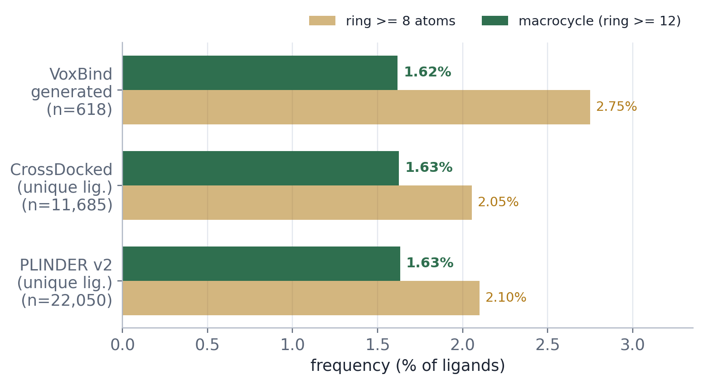
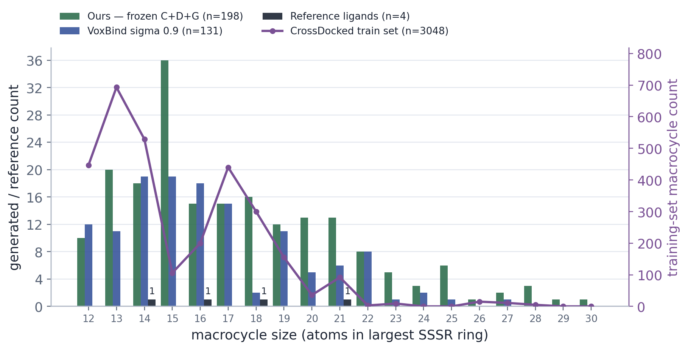
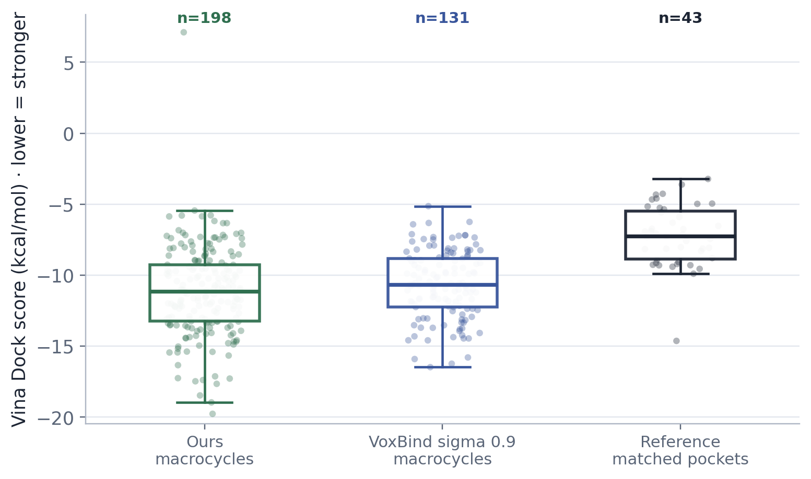
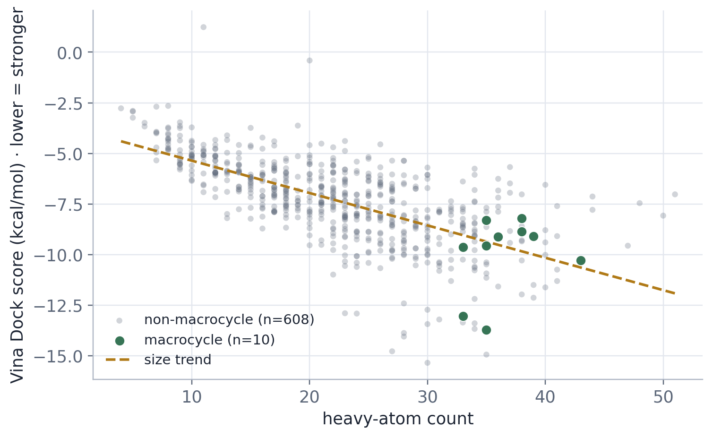
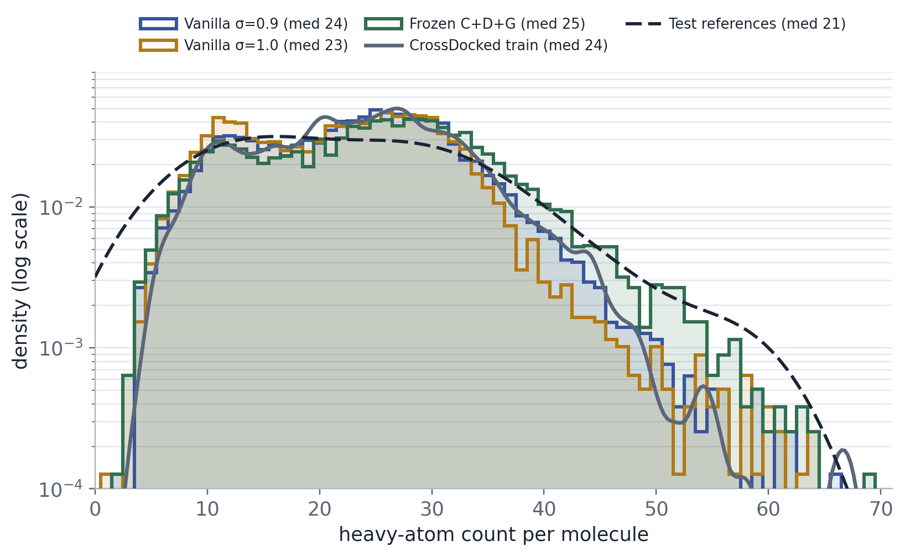

Do the ligands VoxBind generates contain macrocycles, how does their rate compare to the training/reference corpora (CrossDocked, PLINDER), and how are macrocycle status, molecular size, and Vina docking score related? A macrocycle = any ring of ≥ 12 atoms (largest SSSR ring); ring ≥ 8 shown as a looser "large-ring" cut.
Largest ring size per ligand computed with RDKit
(GetRingInfo().AtomRings()). Datasets deduplicated by canonical SMILES so the fraction
reflects distinct chemistry, not repeated poses/instances.
Table 1 · Fraction of ligands that are macrocyclic
Highlighted column = macrocycle rate at the standard ≥ 12-atom threshold.
| Population | N ligands | macrocycles (ring ≥ 12) | % macro (ring ≥ 12) |
large-ring (ring ≥ 8) | % large-ring (ring ≥ 8) |
|---|---|---|---|---|---|
| VoxBind generated generateddiffusion samples, 62 pockets · 10k-step run · res_ep99_test | 618 | 10 | 1.62% | 17 | 2.75% |
| CrossDocked datasetreference ligands, deduplicated by canonical SMILES | 11,685 (149,309 poses) | 190 | 1.63% | 240 | 2.05% |
| PLINDER v2 (unique) datasetcanonical SMILES, deduplicated · RSCC≥0.8 pretrain corpus | 22,050 (113,976 inst.) | 360 | 1.63% | 463 | 2.10% |
| PLINDER v2 (instances) datasetinstance-level (multi-ligand, no dedup) — what the encoder sees | 113,976 | 1,430 | 1.25% | 1,846 | 1.62% |

Figure 1 · Macrocycle (ring ≥ 12) and large-ring (ring ≥ 8) rate per population.

Figure 1b · Macrocycle-size frequency in the 79-pocket full evaluation. x = largest macrocycle ring size; bars (left axis) = molecule count for the generated / reference groups. The two lines (right axis, shared count scale) are the dataset macrocycle-size shapes: CrossDocked train (n=3,048 — the generator's training set) and PLINDER v2 pretrain (n=1,430 instances — the frozen density encoder's pretraining corpus). Ours: n=198, sizes 12–30; vanilla σ 0.9: n=131, sizes 12–27; reference: n=4, sizes 14, 16, 18, 21. Both datasets peak at ring 12–13, whereas Ours skews larger (mode 15, a longer tail to 30).
Full 79-pocket evaluation. Generated groups include every molecule whose largest SSSR ring has ≥ 12 atoms: 198 ours and 131 vanilla σ 0.9. The reference group contains one redocked crystal ligand for each of the 43 unique pockets where either model generated a macrocycle, providing a pocket-matched baseline. Vina is in kcal/mol; lower (more negative) = stronger predicted binding.
Table 2 · Vina Dock score for generated macrocycles vs. matched reference
Per-molecule scores for generated macrocycles; one redocked crystal ligand per macrocycle-bearing pocket for the reference. IQR = 25th–75th percentile.
| Population | N | Pockets | Mean↓ | Median↓ | Std | IQR | Min–Max |
|---|---|---|---|---|---|---|---|
| Ours — frozen C+D+G oursmacrocycles · σ 0.9 · ep350 | 198 | 30 | −11.165 | −11.156 | 3.131 | −13.249 to −9.271 | −19.765 to 7.107 |
| Vanilla VoxBind σ 0.9 baselinemacrocycles · reproduced · ep350 | 131 | 38 | −10.682 | −10.680 | 2.365 | −12.245 to −8.838 | −16.477 to −5.139 |
| Reference crystalone redocked ligand per union pocket | 43 | 43 | −7.236 | −7.255 | 2.152 | −8.858 to −5.472 | −14.629 to −3.223 |

Figure 2 · Macrocycle Vina Dock score for ours and vanilla σ 0.9, with the pocket-matched crystal reference. Boxes = IQR and median; points = individual generated macrocycles or one reference ligand per pocket; lower = stronger predicted binding.
A macrocycle contributes 12–23 ring atoms on its own, so macrocyclic ligands are
necessarily heavy — and Vina scores grow more negative with heavy-atom count regardless of binding.
Before attributing the historical macrocycle-vs-non-macrocycle gap to macrocyclicity we control for size
in the 618-sample screen two ways: (a) an OLS with
n_atoms + macrocycle flag as predictors, and (b) a size-matched comparison against only the
large non-macrocycles.
Table 3 · Size control (VoxBind generated · dock)
| mean heavy atoms — macro vs non | 36.5 vs 22.3 |
| corr(dock, heavy atoms) — Pearson / Spearman | -0.656 / -0.706 |
| Vina per added heavy atom (OLS slope) | -0.159 kcal/mol·atom⁻¹ |
| macrocycle effect, size-adjusted (OLS coef ± SE) | -0.41 ±0.52 · p = 0.437 |
| size-matched set (non-macro heavy atoms ≥ smallest macrocycle) | n = 10 macro vs 81 large non-macro |
| size-matched Δ · p | -0.87 kcal/mol · p = 0.153 |

Figure 3 · Dock score vs. heavy-atom count. Macrocycles (green) sit at the heavy / strong-dock end of the general size trend (dashed).
voxbind/exps/260518_voxbind_10k_noise/samples/res_ep99_test;
Figures 1b–2 and Table 2 use the 79-pocket full evaluations for
voxbind_frozenenc_atomblob7_v2p1_sig0.9 and exp_sig0.9_v2;
CrossDocked = voxbind/dataset/data/crossdocked_pocket10 (unique ligands);
PLINDER = voxbind/splits/plinder/v2/plinder_selected.csv.The fusion choice we ran: condition VoxBind's walk-jump generator on the pretrained density MAE. The frozen C+D+G ChannelViT-MAE encoder (atomblob7 v2.1, 45.7M, PLINDER 40M) reads the full 13-channel voxel with the ligand channel masked — the only channels present at sampling time — and its features are fused into the UNet3D denoiser through a zero-initialised additive path, so training starts exactly at baseline VoxBind and grows the density signal from there. Below: how it plugs in (2a), how it generates vs. reproduced vanilla VoxBind (2b), an in-progress variant that force-masks the ligand density (2c), and the size distribution of what it generates (2d).
Early channel-concat into a frozen encoder, followed by additive fusion. The configuration uses fewer added parameters than cross-attention or FiLM injection and reduces to baseline VoxBind at initialisation: the zero-initialized fusion contributes zero before its weights begin to change during training.
frozen
trainable ·
the ⊕ fuse is zero-initialised (starts by adding 0 → training begins exactly at baseline VoxBind, then grows the density signal). The encoder input must be v5 density (arcsinh+z, xray_crops_aligned_v5) to match pretraining. Source: voxbind/models/voxbind.py.
Conditional de novo generation on the held-out CrossDocked test set. Each reproduced
run generates 100 ligands for the 79 test pockets that carry x-ray density (~7,870 valid mols),
scored by full vina_dock. Vina in kcal/mol, lower = stronger; every metric split into
per-pocket Avg / Med. Ours = the frozen-encoder generator; vanilla σ 0.9 / 1.0
are reproduced walk-jump baselines on the same 79 pockets.
Table 4 · Frozen-encoder generator vs. reproduced vanilla VoxBind
Vina Dock is the primary binding metric reported here. Reference = the redocked crystal ligand on the same 79 pockets. High aff. = % of generated ligands with a lower Vina Dock score than that pocket's reference.
| Method | Dock↓ Avg | Dock↓ Med |
Min↓ Avg | Min↓ Med |
Score↓ Avg | Score↓ Med |
High aff↑ Avg | High aff↑ Med |
QED↑ | SA↑ | Div↑ |
|---|---|---|---|---|---|---|---|---|---|---|---|
| Reference crystalredocked crystal ligand · 79 density pockets | -7.18 | -6.91 | — | — | — | — | — | — | — | — | — |
| VoxBind σ 0.9 baselinewalk-jump · reproduced · 79 density | -7.98 | -8.02 | -6.84 | -7.01 | -5.26 | -6.60 | 65.3% | 70.0% | 0.56 | 0.69 | 0.74 |
| VoxBind σ 1.0 baselinewalk-jump · reproduced · 79 density | -7.80 | -8.07 | -6.76 | -6.88 | -5.35 | -6.51 | 63.5% | 69.3% | 0.54 | 0.68 | 0.75 |
| Ours — frozen C+D+G oursfrozen encoder · σ 0.9 · ep350 · 79 density | -8.24 | -8.75 | -7.09 | -8.04 | -5.51 | -7.53 | 67.5% | 74.0% | 0.52 | 0.68 | 0.71 |
Table 5 · Same results, two outlier pockets removed
The Vina Score average is inflated by two pockets whose generated poses carry severe steric clashes (physically implausible positive scores): target_92 (CHIB_SERMA / 4z2g, Vina Score ≈ +72, still +20 to +25 after minimisation) and target_58 (NPD_THEMA / 3pdh, ≈ +14). Dropping them leaves 77 pockets. Same columns as Table 4.
| Method · 77 pockets | Dock↓ Avg | Dock↓ Med |
Min↓ Avg | Min↓ Med |
Score↓ Avg | Score↓ Med |
High aff↑ Avg | High aff↑ Med |
QED↑ | SA↑ | Div↑ |
|---|---|---|---|---|---|---|---|---|---|---|---|
| Reference crystalredocked crystal ligand · 77 pockets | -7.21 | -6.91 | -6.65 | -6.22 | -6.28 | -6.04 | — | — | — | — | — |
| VoxBind σ 0.9 baselinewalk-jump · reproduced · 77 pockets | -8.01 | -8.02 | -7.28 | -7.19 | -6.62 | -6.84 | 64.9% | 66.5% | 0.56 | 0.69 | 0.74 |
| VoxBind σ 1.0 baselinewalk-jump · reproduced · 77 pockets | -7.83 | -8.07 | -7.15 | -7.14 | -6.53 | -6.53 | 62.9% | 65.3% | 0.55 | 0.68 | 0.74 |
| Ours — frozen C+D+G oursfrozen encoder · σ 0.9 · ep350 · 77 pockets | -8.26 | -8.75 | -7.59 | -8.11 | -6.75 | -7.61 | 66.9% | 73.0% | 0.52 | 0.68 | 0.71 |
The MAE was pretrained on masked clean voxels, so a variant force-masks the
ligand's own density in the encoder input (density_mask_ligand, threshold 0.2, dilate 2) —
the frozen encoder then only ever sees a masked ligand, closer to its pretraining diet. Snapshot at
ep100 on the 10-pocket probe set (test ids 2–12, 10 samples each = 100 mols).
Table 6 · Ligand-masked variant (10-pocket probe)
Same 10 density pockets as the earlier frozen-enc probes, so directly comparable to them.
| Run · 10 pockets | Dock↓ | Min↓ | Score↓ | High aff↑ | QED↑ | SA↑ | Div↑ |
|---|---|---|---|---|---|---|---|
| Ligmask ep100 ours · newforce-masked ligand density · σ 0.9 | -9.05 | -8.37 | -7.82 | 78% | 0.58 | 0.61 | 0.63 |
| Frozen-enc ep99 prior probefull-13ch, lig=0 · σ 0.9 | -8.65 | -7.77 | -7.10 | 63% | 0.57 | 0.63 | 0.67 |
| Frozen-enc ep71 prior probefull-13ch, lig=0 · σ 0.9 | -8.60 | -7.65 | -6.96 | 64% | 0.53 | 0.60 | 0.64 |
| Vanilla σ 0.9 baselineno density · ep923 | -8.66 | — | — | 64% | 0.57 | 0.72 | 0.73 |
splat_masked_generation.html).
Per-molecule heavy-atom counts across the ~7,870 generated ligands per run (79 density pockets × 100), against two CrossDocked baselines: the training set (99,981 ligands, mean 23.6 / median 24) and the test-pocket reference ligands (79, mean 22.8 / median 21; shown in the Mean/Median headers). Figure 4 is included because heavy-atom count is associated with Vina score (§1c), so differences in molecular-size distributions are relevant context for comparing the runs. The log-density scale keeps the low-frequency 40–70-atom region visible.
Table 7 · Heavy-atom count per run
Over every generated molecule (not per-pocket means). IQR = 25th–75th percentile.
| Run | N mols | Mean test ref 22.8 | Median test ref 21 | Std | IQR | Min–Max |
|---|---|---|---|---|---|---|
| VoxBind σ 0.9 baseline | 7,879 | 23.4 | 24 | 9.0 | 16–29 | 2–66 |
| VoxBind σ 1.0 baseline | 7,870 | 22.2 | 23 | 8.9 | 14–29 | 1–64 |
| Ours — frozen C+D+G ours | 7,873 | 24.9 | 25 | 10.3 | 17–32 | 2–69 |

Figure 4 · Heavy-atom count distribution (log-scale y, to expose the long right tail) for the three generation runs, over two dataset baselines: the CrossDocked training set (99,981 ligands, grey solid KDE) and the test-pocket reference ligands (79, black dashed KDE); median values are listed in the legend above the plotting area.
260701_plinder_v2p1_box_atomblob7_cdg_channelvit_full_pretrain
(checkpoint_e0099, ChannelViT MAE, 45.7M, 13ch: 7 lig + 4 poc + density + gradmag), loaded
strict, 0 trainable params.voxbind_frozenenc_atomblob7_v2p1_sig0.9 ep350; vanilla
σ0.9 = exp_sig0.9_v2 ep350, σ1.0 = exp_sig1.0_350ep ep349; ligmask (2c) =
voxbind_frozenenc_atomblob7_v2p1_ligmask_sig0.9 ep100. Table 4 numbers from
voxbind_results.html; Tables 6–7 & Figure 4 from each run's
eval_docking_results.json. The CrossDocked baselines in Figure 4 =
training-set ligand heavy-atoms (data_train.pt, 99,981, grey KDE) and the 79 test-pocket
reference crystal ligands (crossdocked_pocket10/, dashed KDE; also the Table 7
Mean/Median header baseline).Where results are not reproducing, the suspected cause, and the plan to pin it down.
New external baselines to add to the lp_edrscc_v2 Table 1 comparison.
lp_edrscc_v2).